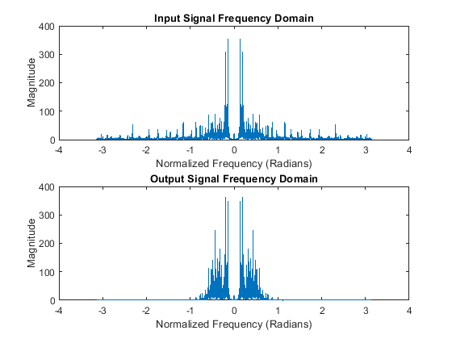
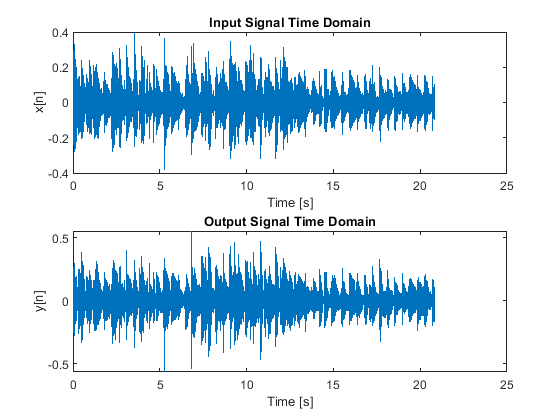
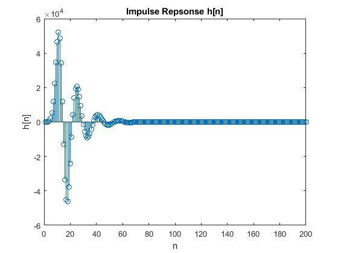
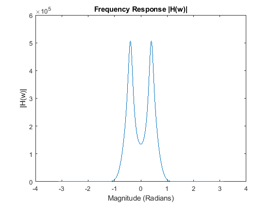
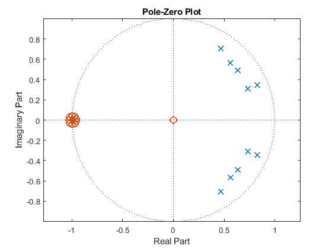
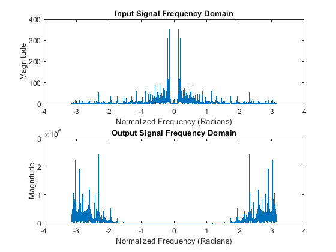
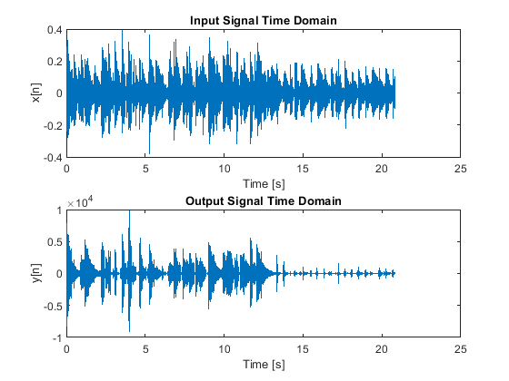
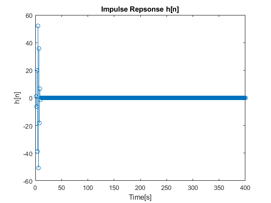
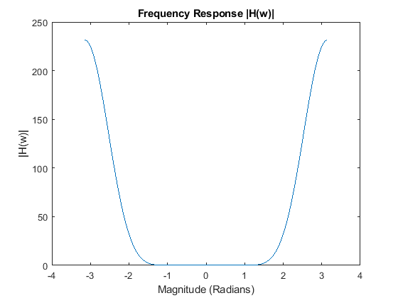
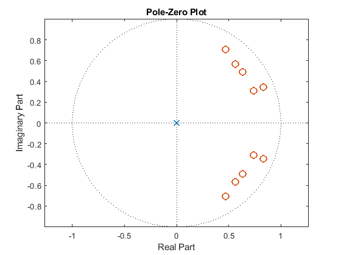

Contents
- QUESTION 1 COMMENTING
- QUESTION 2 Thinking in Three Domains 1
- 2 (a) Answer question
- 2 (b) Answer question
- 2 (c) Plot inputs and outputs
- 2 (d) Answer question
- 2 (e) Plot impulse response
- 2 (f) Answer question
- 2 (g) Plot freqeuency response
- 2 (h) Answer question
- 2 (i) Plot pole-zero plot
- 2 (j) Answer question
- 2 (k) Submit file on Canvas
- QUESTION 3 Thinking in Three Domains 2
- 3 (a) Answer question
- 3 (b) Answer question
- 3 (c) Plot inputs and outputs
- 3 (d) Answer question
- 3 (e) Plot impulse response
- 3 (f) Answer question
- 3 (g) Plot freqeuency response
- 3 (h) Answer question
- 3 (i) Plot pole-zero plot
- 3 (j) Answer question
- 3 (k) Submit file on Canvas
- ALL FUNCTIONS SUPPORTING THIS CODE %% function pzplot(b,a)
QUESTION 1 COMMENTING
% DO NOT REMOVE THE LINE BELOW clear; close all; clc;
QUESTION 2 Thinking in Three Domains 1
% LOAD AUDIO % MAKE SURE 'music.wav' is in the same directory! [x, fs] = audioread('music.wav'); % DEFINE AXES w = -pi:pi/8000:pi-pi/8000; t = 1/fs:1/fs:length(x)/fs; N = 100; n = 0:(N-1); x1 = zeros(2*N, 1); x1(1) = 1;
2 (a) Answer question
% A Low-pass filter is used because the string bass have lower frequencies % compared to guitars, which have higher frequencies. A Low-pass filter % allows the lower frequencies of the pass to pass through while % accentuating higher frequencies, the guitar.
2 (b) Answer question
% IIR Filters because even though there are only a limited number of values % for poles and zeroes, poles are used to amplify signals arount certain center % frequencies
2 (c) Plot inputs and outputs
% DEFINE POLES (for a low-pass filter) center = (0.5e4/5e4)*2*pi*2*pi; mypoles = [ ... 0.9*exp(1j*center*0.1) ... 0.9*exp(-1j*center*0.1) ... 0.85*exp(1j*center*0.25) ... 0.85*exp(-1j*center*0.25) ... 0.8*exp(1j*center*(1/10)) ... 0.8*exp(-1j*center*(1/10)) ... 0.8*exp(1j*center*(1/6)) ... 0.8*exp(-1j*center*(1/6)) ... 0.8*exp(1j*center*(1/5)) ... 0.8*exp(-1j*center*(1/5)) ... ]; % DEFINE ZEROS (to shape the filter response) myzeros = [ ... -1 ... 0.99*exp(1j*(((2*pi*0.98)/fs)+0.5)*2*pi) ... 0.99*exp(-1j*(((2*pi*0.98)/fs)+0.5)*2*pi) ... 0.99*exp(1j*(((2*pi*0.95)/fs)+0.5)*2*pi) ... 0.99*exp(-1j*(((2*pi*0.95)/fs)+0.5)*2*pi) ... 0.99*exp(1j*(((2*pi*0.97)/fs)+0.5)*2*pi) ... 0.99*exp(-1j*(((2*pi*0.97)/fs)+0.5)*2*pi) ... 0.99*exp(1j*(((2*pi*0.93)/fs)+0.5)*2*pi) ... 0.99*exp(-1j*(((2*pi*0.93)/fs)+0.5)*2*pi) ... ]; % CONVERT POLES AND ZEROS INTO COEFFICIENTS [b1, a1] = pz2ba(mypoles, myzeros); % COMPUTE GAIN TO MAINTAIN SIGNAL AMPLITUDE AROUND SOME FREQUENCY G = abs(sum(a1.*exp(-1j.*0.5e4/5e4*2*pi.*(0:(length(a1)-1))))./sum(b1.*exp(-1j.*0.5e4/5e4*2*pi.*(0:(length(b1)-1))))); % FILTER INPUT y = filter(G*b1, a1, x); % PLOT FREQUENCY DOMAIN AND TIME DOMAIN INPUT / OUTPUT % COMPUTE FREQUENCY DOMAIN REPRESENTATION X = DTFT(x, w); Y = DTFT(y, w); % PLOT FREQUENCY DOMAIN figure; subplot(211); plot(w, abs(X)); xlabel('Normalized Frequency (Radians)'); ylabel('Magnitude'); title('Input Signal Frequency Domain'); subplot(212) plot(w, abs(Y)); xlabel('Normalized Frequency (Radians)'); ylabel('Magnitude'); title('Output Signal Frequency Domain'); % PLOT TIME DOMAIN figure; subplot(211); plot(t, x); xlabel('Time [s]'); ylabel('x[n]'); title('Input Signal Time Domain'); subplot(212); plot(t, y); xlabel('Time [s]'); ylabel('y[n]'); title('Output Signal Time Domain'); 
2 (d) Answer question
% The plots show that the filter attentuates high frequencies whil passing % the lower frequncies. So the flter does show the areas where the guitar % dominates as they are lower in the output time domain.
2 (e) Plot impulse response
y1 = filter(b1, a1, x1); figure; stem(y1); title('Impulse Repsonse h[n]'); xlabel('n'); ylabel('h[n]');
2 (f) Answer question
% The system is an IIR filter with a damped response where there are zeros % with magnitudes less than 1. Also, since there are a lot of poles near % the unit cercle smaller than one, the systme is stable.
2 (g) Plot freqeuency response
H_1 = DTFT(y1, w); figure; plot(w,abs(H_1)); title('Frequency Response |H(w)|'); xlabel('Magnitude (Radians)'); ylabel('|H(w)|');
2 (h) Answer question
% The filter shows a low pass response, which is what we are looking for. % It does have a transition band slope that could be caused by anything. % The filter also has a mirror effect, but looking only at the positive % numbers, it is low-pass
2 (i) Plot pole-zero plot
% PLOT POLE-ZERO PLOT figure; pzplot(b1, a1); axis equal;
2 (j) Answer question
% The filter is a lowpass filter since all the poles are centered around % lower frequencies to aplify them. And the zeros are centered around the % higher frequencies. There is a zero at the origin, but there isn't much % signigicance since there are much more poles than zeros. The system is % table since all the poles have a magnitude less than 0.
2 (k) Submit file on Canvas
% PLAY MUSIC disp('Playing Original Music ... ') soundsc(x, fs) pause(length(x)/fs*1.1) disp('Playing Filtered Music ... ') soundsc(y, fs) % SAVE RESULT % NORMALIZE THE SIGNAL TO AVOID CLIPPING audiowrite('q2.wav', y./max(abs(y)), fs) save('q2.mat', 'b1', 'a1');
Playing Original Music ... Playing Filtered Music ...
QUESTION 3 Thinking in Three Domains 2
% LOAD AUDIO % MAKE SURE 'music.wav' is in the same directory! [x, fs] = audioread('music.wav'); % DEFINE AXES w = -pi:pi/8000:pi-pi/8000; t = 1/fs:1/fs:length(x)/fs; N = 200; n = 0:(N-1); x1 = zeros(2*N, 1); x1(1) = 1;
3 (a) Answer question
% The type of filter is high pass because the guitar has higher frequencies % compared to the string bass, so high-pass filter will allow for the % higher frequencies while attentuating the lower frequencies. The bass is % somewhat removed, so the sound is really smalle, but due to the harmonics % of the bass, some of the sound isn't moved, espacially at the end.
3 (b) Answer question
% FIR Filter because FIR filters are generally stable and can be designed % to have linear phase responses, which is good for audio applications. % Additionally the requirement of having no more than non-zero coefficients % fits well with FIR.
3 (c) Plot inputs and outputs
% DEFINE POLES (for a high-pass filter) mypoles = []; % DEFINE ZEROS (to shape the filter response) center = (0.5e4/5e4)*2*pi*2*pi; myzeros = [ ... 0.9*exp(1j*center*0.1) ... 0.9*exp(-1j*center*0.1) ... 0.85*exp(1j*center*0.25) ... 0.85*exp(-1j*center*0.25) ... 0.8*exp(1j*center*(1/10)) ... 0.8*exp(-1j*center*(1/10)) ... 0.8*exp(1j*center*(1/6)) ... 0.8*exp(-1j*center*(1/6)) ... 0.8*exp(1j*center*(1/5)) ... 0.8*exp(-1j*center*(1/5)) ... ]; % CONVERT POLES AND ZEROS INTO COEFFICIENTS [b2, a2] = pz2ba(mypoles, myzeros); % COMPUTE GAIN TO MAINTAIN SIGNAL AMPLITUDE AROUND SOME FREQUENCY G = abs(sum(a2.*exp(-1j.*0.5e4/5e4*2*pi.*(0:(length(a2)-1))))./sum(b2.*exp(-1j.*0.5e4/5e4*2*pi.*(0:(length(b2)-1))))); % FILTER INPUT y = filter(G*b2, a2, x); % PLOT FREQUENCY DOMAIN AND TIME DOMAIN INPUT / OUTPUT % COMPUTE FREQUENCY DOMAIN REPRESENTATION X = DTFT(x, w); Y = DTFT(y, w); % PLOT FREQUENCY DOMAIN figure; subplot(211); plot(w, abs(X)); xlabel('Normalized Frequency (Radians)'); ylabel('Magnitude'); title('Input Signal Frequency Domain'); subplot(212) plot(w, abs(Y)); xlabel('Normalized Frequency (Radians)'); ylabel('Magnitude'); title('Output Signal Frequency Domain'); % PLOT TIME DOMAIN figure; subplot(211); plot(t, x); xlabel('Time [s]'); ylabel('x[n]'); title('Input Signal Time Domain'); subplot(212); plot(t, y); xlabel('Time [s]'); ylabel('y[n]'); title('Output Signal Time Domain'); 
3 (d) Answer question
% The plot should show a high pass filter where the output at the end where % the string bass is most prominent is smaller than the original input.
3 (e) Plot impulse response
y1 = filter(b2, a2, x1); figure; stem(y1); title('Impulse Repsonse h[n]'); xlabel('Time[s]'); ylabel('h[n]');
3 (f) Answer question
% The impulse response shows that the system is stable since there are no % non-zero poles and the system is finite since there are only 10 values in % the filtered response.
3 (g) Plot freqeuency response
H_1 = DTFT(y1, w); figure; plot(w,abs(H_1)); title('Frequency Response |H(w)|'); xlabel('Magnitude (Radians)'); ylabel('|H(w)|');
3 (h) Answer question
% The magnitude response should confirm that the filter allows high % frequencues to pass wile attentuating lower frequencies. Due to the % steepness we know the order of the high pass is greater than 1.
3 (i) Plot pole-zero plot
% PLOT POLE-ZERO PLOT figure; pzplot(b2, a2); axis equal;
3 (j) Answer question
% The pole=zero plot shows a high pass filtering system since all the % zeros are around the 0 radian line, and the system is FIR since there is % only one pole at the origin. Additionally the system is stable because % the poles are only inside the unit circle.
3 (k) Submit file on Canvas
% PLAY MUSIC disp('Playing Original Music ... ') soundsc(x, fs) pause(length(x)/fs*1.1) disp('Playing Filtered Music ... ') soundsc(y, fs) % SAVE RESULT % NORMALIZE THE SIGNAL TO AVOID CLIPPING audiowrite('q3.wav', y./max(abs(y)), fs) save('q3.mat', 'b2', 'a2');
Playing Original Music ... Playing Filtered Music ...
ALL FUNCTIONS SUPPORTING THIS CODE %% function pzplot(b,a)
PZPLOT(B,A) plots the pole-zero plot for the filter described by vectors A and B. The filter is a "Direct Form II Transposed" implementation of the standard difference equation:
a(1)*y(n) = b(1)*x(n) + b(2)*x(n-1) + ... + b(nb+1)*x(n-nb)
- a(2)*y(n-1) - ... - a(na+1)*y(n-na)
% MODIFY THE POLYNOMIALS TO FIND THE ROOTS b1 = zeros(max(length(a),length(b)),1); % Need to add zeros to get the right roots a1 = zeros(max(length(a),length(b)),1); % Need to add zeros to get the right roots b1(1:length(b)) = b; % New a with all values a1(1:length(a)) = a; % New a with all values % FIND THE ROOTS OF EACH POLYNOMIAL AND PLOT THE LOCATIONS OF THE ROOTS h1 = plot(real(roots(a1)), imag(roots(a1))); hold on; h2 = plot(real(roots(b1)), imag(roots(b1))); hold off; % DRAW THE UNIT CIRCLE circle(0,0,1) % MAKE THE POLES AND ZEROS X's AND O's set(h1, 'LineStyle', 'none', 'Marker', 'x', 'MarkerFaceColor','none', 'linewidth', 1.5, 'markersize', 8); set(h2, 'LineStyle', 'none', 'Marker', 'o', 'MarkerFaceColor','none', 'linewidth', 1.5, 'markersize', 8); axis equal; % DRAW VERTICAL AND HORIZONTAL LINES xminmax = xlim(); yminmax = ylim(); line([xminmax(1) xminmax(2)],[0 0], 'linestyle', ':', 'linewidth', 0.5, 'color', [1 1 1]*.1) line([0 0],[yminmax(1) yminmax(2)], 'linestyle', ':', 'linewidth', 0.5, 'color', [1 1 1]*.1) % ADD LABELS AND TITLE xlabel('Real Part') ylabel('Imaginary Part') title('Pole-Zero Plot') end function circle(x,y,r) % CIRCLE(X,Y,R) draws a circle with horizontal center X, vertical center % Y, and radius R. % % ANGLES TO DRAW ang=0:0.01:2*pi; % DEFINE LOCATIONS OF CIRCLE xp=r*cos(ang); yp=r*sin(ang); % PLOT CIRCLE hold on; plot(x+xp,y+yp, ':', 'linewidth', 0.5, 'color', [1 1 1]*.1); hold off; end function H = DTFT(x,w) % DTFT(X,W) compute the Discrete-time Fourier Transform of signal X % acroess frequencies defined by W. H = zeros(length(w),1); for nn = 1:length(x) H = H + x(nn).*exp(-1j*w.'*(nn-1)); end end function xs = shift(x, s) % SHIFT(x, s) shifts signal x by s such that the output can be defined by % xs[n] = x[n - s] % INITIALIZE THE OUTPUT xs = zeros(length(x), 1); for n = 1:length(x) % CHECK IF THE SHIFT IS OUT OF BOUNDS FOR THIS SAMPLE if n-s > 0 && n-s < length(x) % SHIFT DATA xs(n) = x(n-s); end end end function [b,a] = pz2ba(p,z) % PZ2BA(P,Z) Converts poles P and zeros Z to filter coefficients % B and A % % Filter coefficients are defined by: % a(1)*y(n) = b(1)*x(n) + b(2)*x(n-1) + ... + b(nb+1)*x(n-nb) % - a(2)*y(n-1) - ... - a(na+1)*y(n-na) % % CONVERT ROOTS (POLES AND ZEROS) INTO POLYNOMIALS b = poly(z); a = poly(p); end function [p,z] = ba2pz(b,a) % BA2PZ(B,A) Converts filter coefficients B and A into poles P and zeros Z % % Filter coefficients are defined by: % a(1)*y(n) = b(1)*x(n) + b(2)*x(n-1) + ... + b(nb+1)*x(n-nb) % - a(2)*y(n-1) - ... - a(na+1)*y(n-na) % % MODIFY THE POLYNOMIALS TO FIND THE ROOTS b1 = zeros(max(length(a),length(b)),1); % Need to add zeros to get the right roots a1 = zeros(max(length(a),length(b)),1); % Need to add zeros to get the right roots b1(1:length(b)) = b; % New a with all values a1(1:length(a)) = a; % New a with all values % FIND THE ROOTS OF EACH POLYNOMIAL AND PLOT THE LOCATIONS OF THE ROOTS p = real(roots(a1))+1j*imag(roots(a1)); z = real(roots(b1))+1j*imag(roots(b1)); end